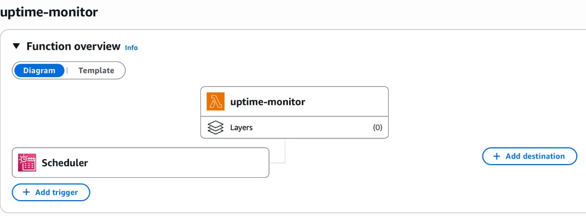
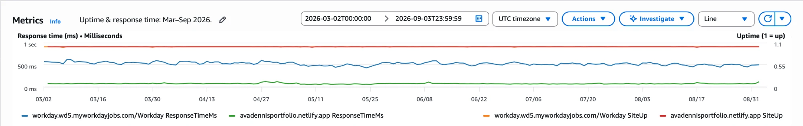
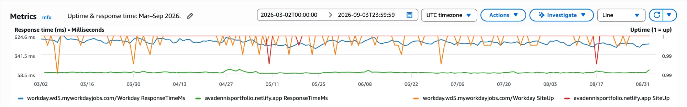
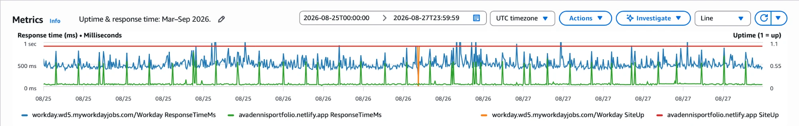
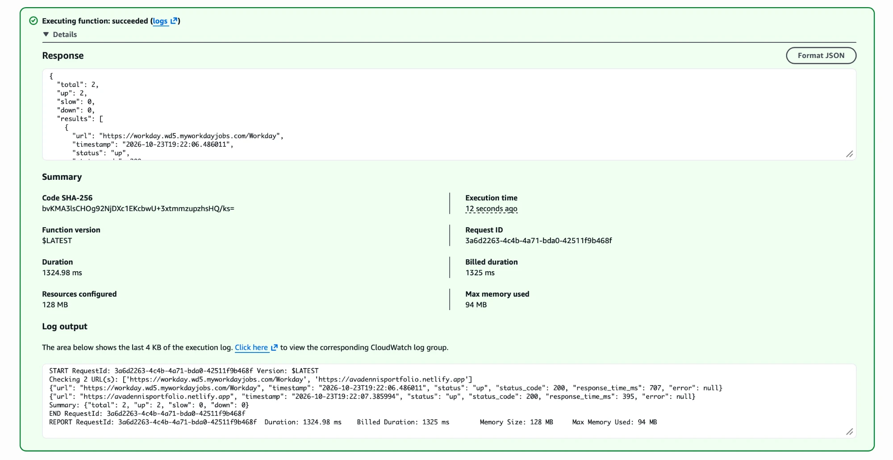
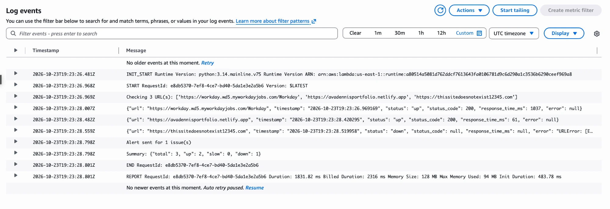
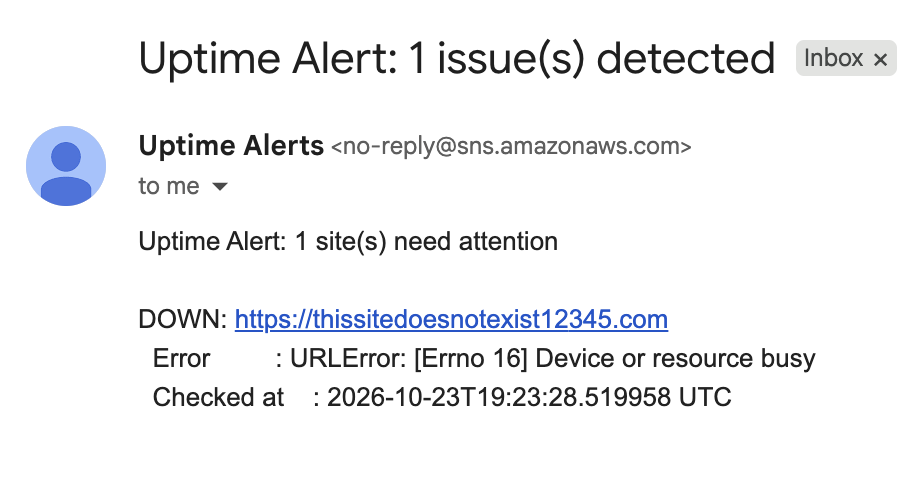

AWS Uptime Monitor
A serverless uptime monitoring tool built on AWS. It checks one or more websites every 5 minutes, logs results to CloudWatch, and sends an email alert through SNS when a site is down or responding slowly.
What it does
An EventBridge Scheduler schedule triggers a Python Lambda function every 5 minutes. The function pings each configured URL and records its status, status code, and response time. Every result goes to CloudWatch Logs, and SiteUp and ResponseTimeMs metrics go to CloudWatch Metrics. If any site is down or slow, it sends one summary alert through SNS to email.
Architecture
EventBridge Scheduler (every 5 min)
|
v
AWS Lambda (Python)
| |
v v
CloudWatch SNS Topic
Logs & |
Metrics v
Email AlertThe deployed function in the Lambda console, with its Scheduler trigger:

Services used
- AWS Lambda: runs the Python checker function with no server to manage.
- Amazon EventBridge Scheduler: triggers Lambda on a fixed
rate(5 minutes)schedule. - Amazon SNS: sends email notifications when a site is down or slow.
- CloudWatch Logs + Metrics: stores every check result and tracks uptime and response-time trends.
- AWS IAM: grants Lambda permission to write to CloudWatch and publish to SNS.
Everything runs within the AWS Free Tier.
Results
The monitor ran continuously from March 2 to September 2, 2026, checking my portfolio site and Workday's careers page every 5 minutes (288 checks per site per day).
Uptime and response time, March–September (daily averages). Both sites stayed up for well over 99.9% of checks. My portfolio (green) responds in well under 100 ms because Netlify serves it from a CDN, while Workday (blue) averages around 500–600 ms.

The same uptime data with the right axis zoomed to 0.99–1. Each dip is a day where roughly 2–3 of the 288 checks failed.

Individual 5-minute checks from August 25–27, showing periodic latency spikes on the portfolio and a single failed Workday check on August 26.

Investigating the latency spikes
An AI assistant suggested Lambda cold starts as a possible cause, so I investigated that. On a cold start, the first URL in the list absorbs extra setup time. A test run right after a cold start supported this: Workday, checked first, took 1037 ms, while my portfolio, checked second, took 61 ms.
Because the portfolio is always checked second, cold starts don't explain its spikes. The more likely cause is CDN cache misses on Netlify's side.
Alerting, end to end
A manual test run from the Lambda console, with both sites up:

To test alerts, I added a domain that doesn't exist. The check failed, Lambda logged it and published to SNS, and the alert email arrived:


What I learned
- Serverless architecture: Lambda functions run on demand, and AWS manages the servers.
- Event-driven design: EventBridge runs workloads on a schedule, much like a cron job.
- Observability: logs show what happened, and metrics show trends in site reliability over time.
- Alerting: SNS separates creating an alert from delivering it, so recipients can be added or removed without redeploying code.
- IAM and least privilege: every AWS API call is checked against IAM policies, so every resource needs explicit permissions.
Configuration
The Lambda is configured through environment variables: URLS (comma-separated sites to monitor), SNS_TOPIC_ARN, TIMEOUT_SECONDS, and SLOW_THRESHOLD_MS. To test alerting, point a URL at a domain that doesn't exist and run the function from the Lambda console with an empty {} payload.
Future improvements
- Provision all infrastructure as code with Terraform.
- Store the URL list in SSM Parameter Store so updates don't need a redeploy.
- Add multi-region checks and a CloudWatch dashboard for uptime history.
- Add SSL certificate expiry checks.
- Replace the broad
FullAccessIAM policies with a least-privilege custom policy. - Report DNS failures with a clear message instead of Lambda's
[Errno 16] Device or resource busy.